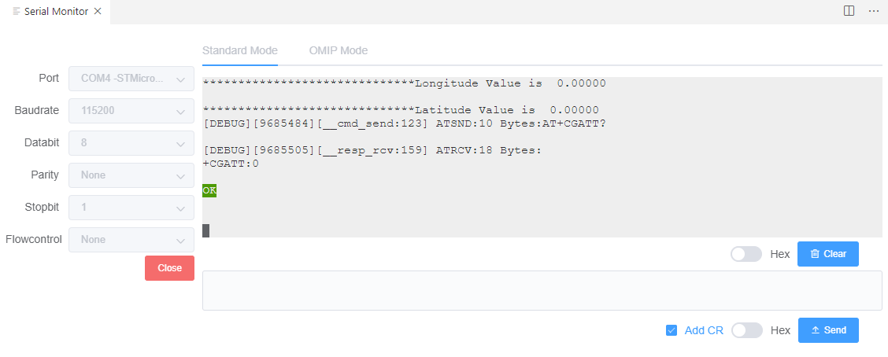
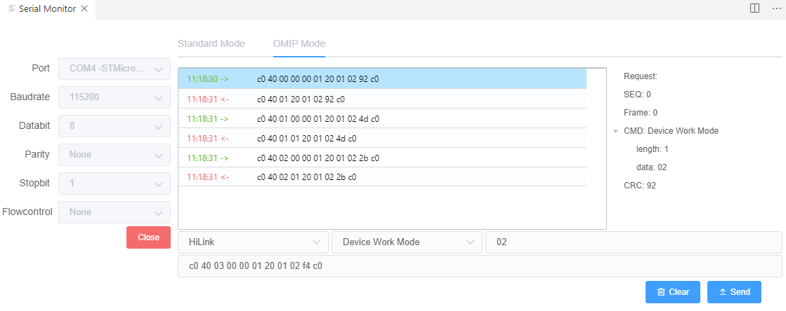

Serial Port Tool
Standard Mode
- Click the "Serial" button in the toolbar at the bottom of VSCode

- Select the corresponding port number, baud rate and other parameters in the pop-up interface, then click ‘Open’
 - Click the ‘Hex’ button below the output area to set the output content to text format or hexadecimal format
- Click the ‘Hex’ button below the input area to set the input content to text format or hexadecimal format
- When "Add CR" is checked, "\r" will be automatically added to the entered text
Note : Closing the window does not close the underlying serial port, please manually click the ‘Close’ button
OMIP Mode
- Switch to OMIP mode
- Select the corresponding port number, baud rate and other parameters, then click "Open"
 - In the input area, you can choose the command classification and command type, and you can also fill in the data of the command
- Click "Send" after modification
- In the output area, you can view the sent commands and the return of the device. Select a line to to view the details of the command